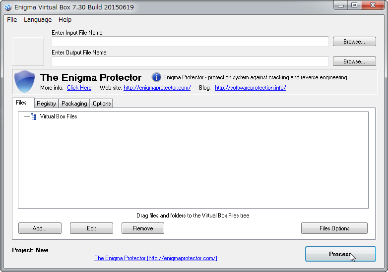
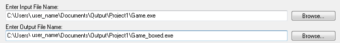
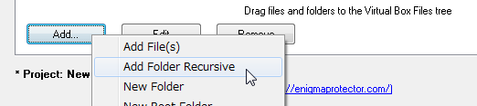
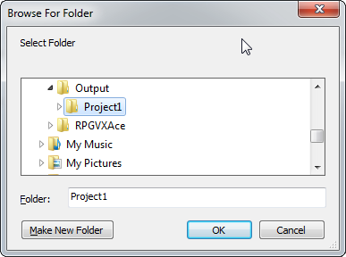
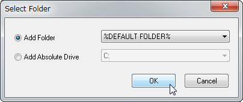
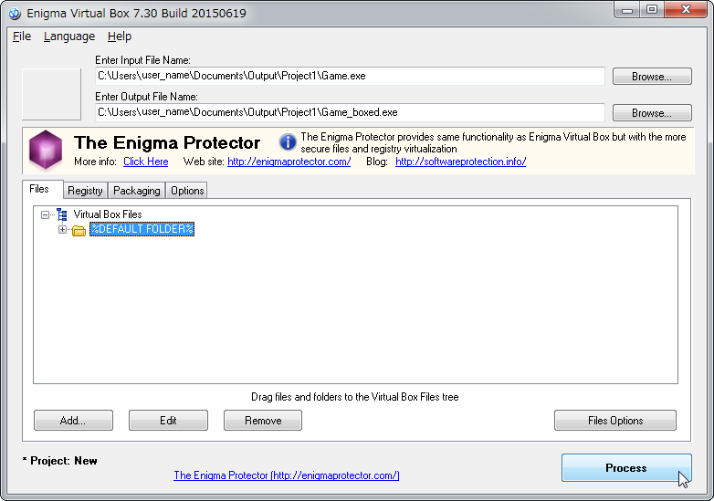

Using Enigma Virtual Box
If you have selected Windows and exported the game folder under Deployment, it is not possible to play the game using just the Game.exe file. You need to distribute the entire game folder.
By using Enigma Virtual Box and packing the game folder, you can distribute only the .exe file.
Download and Install
- Download [Enigma Virtual Box] using the link on the right side of the page below.
http://enigmaprotector.com/en/downloads.html - Double-click the downloaded "enigmavb.exe" file, and install the software following the dialog.
How to Use
- Run Enigma Virtual Box.

- Click the [Browse...] button next to "Enter Input File Name:", and select the game folder's .exe file exported using Windows. "Enter Output File Name:" will be set automatically. (Feel free to change the location and file name.)

- Click the [Add] button, and click [Add Folder Recursive].

- Select the deployed game folder, and a dialog will appear when you click the [OK] button. Simply click the [OK] button.

↓
 - Confirm that the folder is being displayed (the red frame), and run by clicking the [Process] button.

- The .exe file will be saved to the location set in "Enter Output File Name:".
Copyright © 2004-2015, The Enigma Protector Developers Team. All rights reserved.